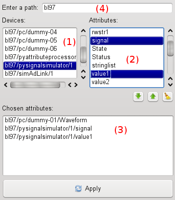

AttributeChooser User’s Interface¶
Note
The AttributeChooser widget has been superseded by the TaurusModelChooser widget. See TaurusModelChooser User’s Interface Guide
The TaurusAttributeChooser is a widget used by Taurus applications for
prompting the user to choose one or more attributes of the control system.

To select the attributes using TaurusAttributeChooser, you typically do the
following:
- Select a device from those available in the Devices list (#1 in the figure)
- Now select one or more attributes of this device from the Attributes list (#2 in the figure).
- Add them to the Chosen Attributes list (#3 in the figure) by either using the Add button (the down arrow icon) or by double-clicking in their names in list #2.
- Repeat previous steps if you want to add other attributes or use the Remove button (the up-arrow icon) to remove attributes from the chosen Chosen Attributes list.
- Click the Apply button to apply the changes when satisfied.
Important: The list of devices (#1 of the figure) can be quite long. You can filter it by typing part of the device name in the Enter path box (#4 in the figure).